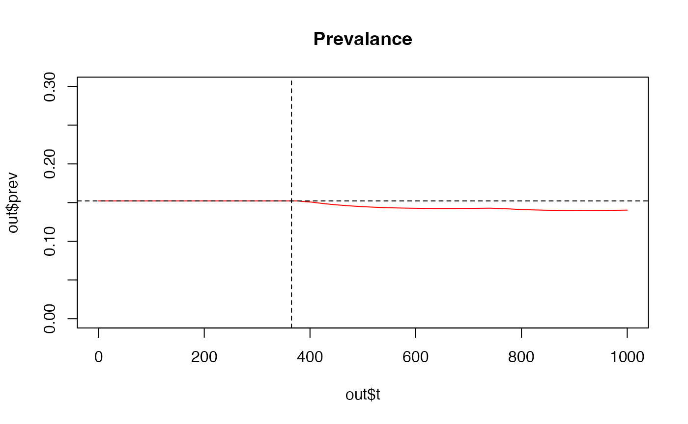
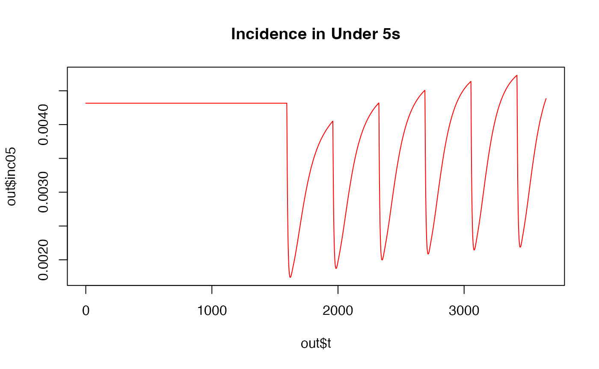

run_model_alternative.RmdTo run the version of the malaria model that has emanators in instead of IRS (see emanator modelling paper), several further parameter values need to be specified when calling run_model:
library(ICDMM)
# Some toy parameter values to run the emanator model
out <- run_model(model = "odin_model_emanators",
time = 1000,
init_EIR = 5,
r_EM0 = 0.6053263, # Probability of emanator repelling mosquito
em_loss = 0.001954954, # Exponential decay of emanator effectiveness
d_EM0 = 0, # Probability of emanator killing mosquito
Q0 = 0.92, # Mosquito anthropophagy (% of bites on humans)
bites_Emanator = 0.4, # % of bites while using emanator
bites_Indoors = 0.6, # % of bites indoors
bites_Bed = 0.55, # % of bites in bed
surv_bioassay = 0, # % of mosquitoes surviving insecticide bioassay
EM_interval = 365, # How often emanators are refreshed
EM_on = 365, # When emanators are first distributioed
ITN_on = 365, # When ITNs are first distributed
ITN_interval = 365*3, # How often ITNs are refreshed
em_cov = 0.9, # Emanator population coverage
irs_cov = 0.9, # This needs to be fixed at some point
itn_cov = 0, # ITN population coverage
num_int = 4,
country = NULL,
admin2 = NULL)
plot(out$t,out$prev, main= "Prevalance", ylim = c(0, 0.3), type='l', col = "red")
abline(v = 365, lty = 2)
abline(h = 0.1522, lty = 2)
In this version of the model, ivermectin is deployed as an endectocide
#Demo of this model to go hereIn this version of the model, a transmission-blocking vaccine (TBV) can be introduced (as described in Challenger et al. forthcoming publication). Note that IRS cannot be introduced in this version of the model. The TBV can be introduced on its own, or delivered alongside a pre-ethrocytic vaccine (based on the RTS,S vaccine). Parameterisation of the latter vaccine was taken from White et al. and Hogan et al.
#Several vaccine-specific parameters are stored here, with their definitions
#source("scripts/vaccine_params.R")
#Here they are, with their definitions
CS_peak <-621 #Peak antibody titre (after primary vaccination with RTS,S)
CS_boost <- 277 # Peak antibody titre (after booster dose of RTS,S)
p_peak <- 0.88 #Proportion of antibody response that is short lived (after primary vaccination with RTS,S)
p_boost<-0.7 #Proportion of antibody response that is short lived (after booster dose of RTS,S)
ds <- 45 #decay rate of short-lived anitbody response to RTS,S
dl <- 591 #decay rate of long-lived anitbody response to RTS,S
beta_RTS <- 99.2 #Shape param for dose-response of RTS,S
alpha_RTS <- 0.74 #Shape param for dose-response of RTS,S
V_max_RTS <- 0.93 # Max RTS,S efficacy
#Scheduling parameters
t_boost_rts <- 365
#Extra params for the TBV vaccine (For Pfs25 estimate)
hill1 <- 2.50 #Hill parameter for dose-response curve
hill2 <- 0.06 #Hill parameter for dose-response curve
mu25 <- 12.63 #Titre (\mu g/ml) to centre the dose-response curve
tau25 <- 22 #Max. antibody titre
rho25 <- 0.7 #Proportion of antibody response associated with quicker decay
ds25 <- 45 #Short antibody half-life
dl25 <- 590 #Long antibody half-life
ds25worse <- 0.5*ds25#35 #Short antibody half-life
dl25worse <- 0.5*dl25 #450 #Long antibody half-life
ds25better <- 2*ds25#55 #Short antibody half-life
dl25better <- 2*dl25 #730 #Long antibody half-life
v_interval <- 365 #Interval between TBV vaccinations
#Parameters to define
ITN_IRS_on <- 4 * 365 + 100 # When ITNs are introduced
init_age <- c(0,0.25,0.5,0.75,1,1.25,1.5,1.75,2,3.5,5,7.5,10,15,20,30,40,50,60,70,80)
#Min & Max age for vaccination. Values refer to the position in age vector, NOT age in years
#RTS,S
age_min_rts <- 3
age_max_rts <- which(init_age > 5)[1] - 1 # index of age vector before age is 5 years
#TBV
age_min_tbv = 5
age_max_tbv = which(init_age > 40)[1] - 1 # index of age vector before age is 40 years
out <- run_model(model = 'odin_model_TBV',
init_EIR = 50,
time = 10*365,
age = init_age,
RTS_switch = 0, #Include RTS,S in vaccination campaign? (Y/N)
switch_TBV = 1, #Include TBV in vaccination campaign? (Y/N)
switch_TRA_to_TBA = 1, # Set to 1 for the model used in the Nat Comms paper
irs_cov = 0.8, #Vaccine coverage (within the specified age group)
itn_cov = 0,
num_int = 4,
ITN_IRS_on = ITN_IRS_on,
vacc_lag = 0.0, #Delay between ITN introduction & start of vaccination campaign
v_interval = v_interval, #frequency of vaccination
hill1 = hill1,
hill2 = hill2,
mu25 = mu25,
tau25 = tau25,
rho25 = rho25,
ds25 = ds25,
dl25 = dl25,
age_min_tbv = age_min_tbv,
age_max_tbv = age_max_tbv,
age_min_rts = age_min_rts,
age_max_rts = age_max_rts,
t_boost_rts = t_boost_rts,
CS_peak = CS_peak,
CS_boost = CS_boost,
p_peak = p_peak,
p_boost = p_boost,
ds = ds,
dl = dl,
beta_RTS = beta_RTS,
alpha_RTS = alpha_RTS,
V_max_RTS = V_max_RTS)
plot(out$t,out$inc05, main= "Incidence in Under 5s", type='l', col = "red")